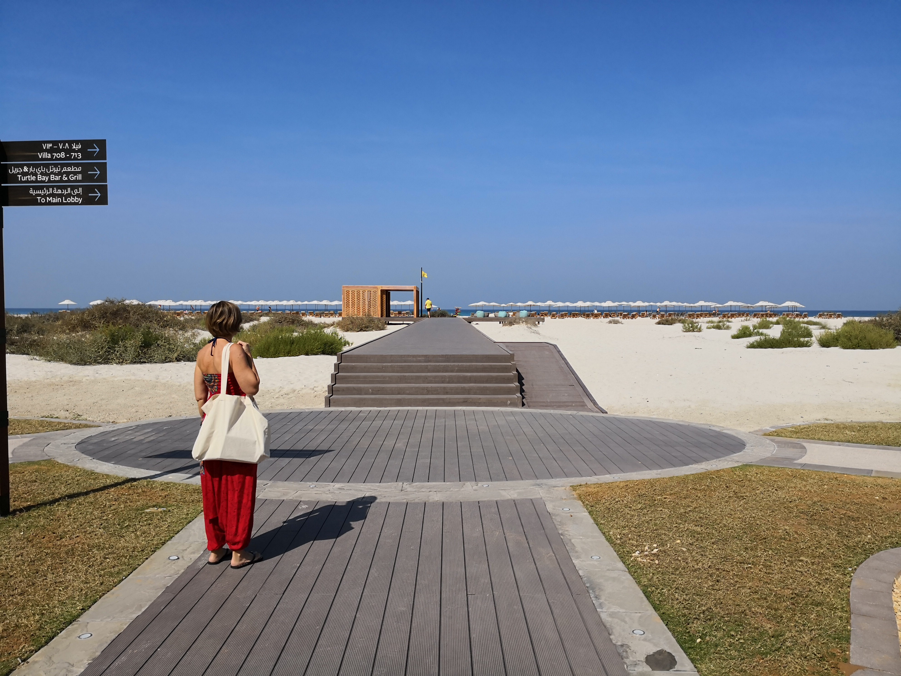

Generally speaking, people see handicap or disability as a set of personal conditions—such as an illness or injury—that prevents someone to do the things that other people do. Designers know this is not true: handicap or disability is a product of a condition and of the environment. In the photo below, taken in a luxury hotel in Saadiyat Beach, Abu Dhabi, what prevents people with reduced mobility to enjoy access to the beach is not their condition but the deliberate choice of the architect of this brand new beach resort to prefer steps to a ramp. Nothing else. A person on a wheelchair would easily reach the beach, should a gentle ramp be there, instead of those steps. Blind people would reach the beach by themselves should a tactile path be there; and elderly people too, had a handrail been installed. And so on. This is not a photo of a lovely resort. This is bad design and we should train ourselves to spot it as often as possible.

Awareness seems to be the key: few weeks after having posted the above on our blog – advertised also via social media – the hotel where the photo had been taken sent the following note:
Dear Goffredo, Greetings from Rotana! Thank you very much for your concern, which we truly appreciate and acknowledge. Please be informed that we are already looking into modifying the beach access and this will be implemented very soon. Kindest regards, the Rotana teamAnd indeed they kept their word and modify the ramp. While they deserve to be congratulated on this effort in remediation, as designers we cannot help noticing that an even better solution exists, as aptly demonstrated by the footbridge of the adjacent public beach where a gentle ramp takes the whole space. As a rule of thumb, next time you see a ramp next to a set of stairs, ask yourself if those steps were needed in the first place.
